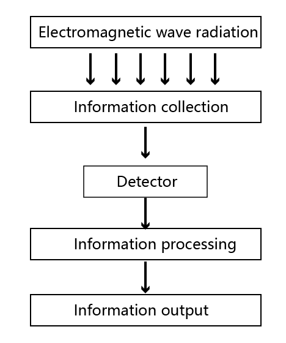
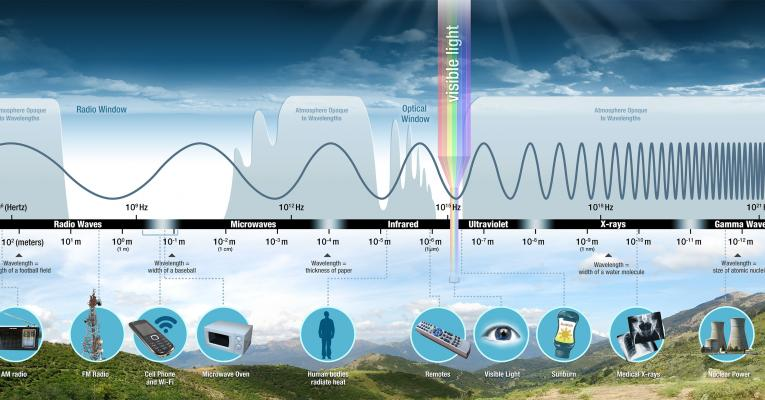
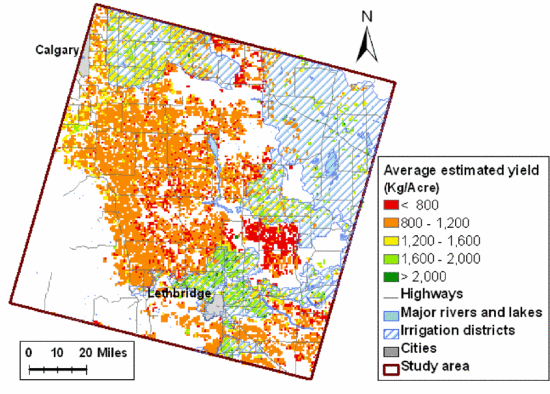

1 Introduction about Remote-sensing
1.1 Summary
1.1.1 The introduction of remote sensing
Remote sensing collects remotely sensed images by special cameras, which help researchers “sense” things about the earth. And it is that the process of detecting and monitoring the physical characteristics of an area by measuring reflected and emitted radiation from a certain distance.For example, forest fires can be mapped from space, seeing a much larger area than from the ground.
1.1.2 Sensor
1.1.2.1 Type
| Active sensor | Passive sensor |
|---|---|
| Using light sources from its own | Using light sources from the sun |
| cannot penetrate dense cloud cover | penetrate the atmosphere |
In addition, they can also be divided into imaging and non-imaging methods according to the recording method.
Imaging mode sensors represent the intensity of the received electromagnetic wave energy in the form of images, such as aerial cameras, scanners, imaging spectrometers.
Non-imaging mode sensorsway to detect the intensity of the electromagnetic wave energy of the ground in the form of digital, curved graphical representation, such as radiometer, infrared radiation thermometer.
1.1.2.2 Component
1.Collector: collects the electromagnetic energy from the ground. For example, lenses for aerial cameras, reflectors for scanners, etc.
2.Detector: converts the collected radiant energy into chemical or electrical energy.
3.Processors: Process the detected signals, such as chemical or electrical energy. For example, film development and fixing, amplification of electrical signals, filtering, modulation, conversion, etc.
4.Output: Outputs the images and data obtained. For example, photographic film, magnetic tape recorders, etc.
1.1.3 Electromagnetic Spectrum
Electromagnetic energy travels in waves and spans a broad spectrum from very long radio waves to very short gamma rays. The human eye can only detect only a small portion of this spectrum called visible light.
Protective Atmosphere
The atmosphere protects us from a range of high-energy waves that are harmful to life. It likewise absorbs electromagnetic radiation. Among these are mainly water vapour, carbon dioxide and ozone.These regions of the spectrum with wavelengths that can pass through the atmosphere are referred to as “atmospheric windows.” Some microwaves can even pass through clouds, which make them the best wavelength for transmitting satellite communication signals. Because most electromagnetic radiation from space is unable to reach the surface of the Earth, for long-term observations, it is best to have your detector on an orbiting satellite.

1.1.4 Remotely sensed data
- Format
The remotely sensed data is raster,mostly GeoTIFF. But LiDAR is the point data.
- Resolution
Resolution has a important role in how data from a sensor can be used. there are four types of resolution to consider for any dataset-radiometric, spatial, spectral, and temporal.
| Resolution Types | Description | Example |
|---|---|---|
| spatial | the size of the raster grid per pixel | 20cm or 30m |
| spectral | the number of bands | Band 2 - blue (0.45-0.51 wavelength) |
| temporal | the time it revisits | daily or every 7 days |
| Radiometric | the number of bits representing the energy recorded | 2 bit, 4 bit, or 8 bit |
1.2 Application
Remote sensing has a wide range of applications in many fields. For example, Remote sensing is widely used in agriculture.Traditionally, satellite imagery has been used for crop condition assessment and type mapping of crops, but due to the limited resolution of the sensors, satellites have been used over large areas. With technological advances, finer subscale green can enable remote sensing applications in the field for disaster assessments such as droughts and floods(Wójtowicz M,2016).What’s more, the NDVI index is used most frequently to determine the condition, developmental stages and biomass of cultivated plants and to forecasts their yields. The NDVI has become the most commonly used vegetation index (Wallace et al. 2004, Calvao and Palmeirim 2004).Through the application of remote sensing, producers and governments can prevent natural disasters in advance and minimise economic losses.
Remote sensing also plays an important role in crop yield forecasting. In the Southern Alberta of Canada, for example, remote sensing is used to assess the extent to which the area is vulnerable to drought conditions and to make yield forecasts. This can provide some support for local agricultural planning and reduce economic risk(Xu W,2011).
Study area: Agricultural production in southern Alberta
Data selection: In order to assess in detail the vulnerability of agriculture to drought, remotely sensed imagery was used in the empirical analysis. The years 1998, 1999 and 2001 were selected as representative of changes in precipitation conditions. Two Landsat TM/ETM+ images for each selected year were also acquired and overlaid to improve the accuracy of the land use cover.
Research methodology: In this paper, sensitivity and health status and exposure were selected as the three influencing factors of vulnerability.
The first step was to identify crop types using supervised classification to prepare the ground for measuring agricultural vulnerability later. And the NDVI of the image area classified as a cereal crop is used as the main independent variable for yield estimation in the subsequent regression analysis.
By calculating the vulnerability coefficient of the crop, the regression is then used to predict the crop yield.

- Comment
The authors have used remote sensing data to predict crop yields and to analyse the impact of drought on a large area of the region, providing powerful data for local agricultural development. The remote sensing data is available free of charge as open source data, which certainly facilitates agricultural analysis.
1.3 Reflection
1Remote sensing technology has been widely used in many fields, such as environmental protection, geological exploration, weather forecasting, agricultural production and urban planning. It provides us with a wealth of information about the Earth and gives us a better understanding of its changes and evolution.
2.It can be used to produce a variety of maps and spatial information products such as digital elevation models, vegetation index maps, land use/cover maps, etc. These products can provide accurate descriptions and analyses of the Earth’s surface features.
3.The rapid development of remote sensing technology has resulted in much lower data acquisition costs and more efficient data processing and analysis. This has allowed an increasing number of institutions and individuals to use remote sensing technology for research and applications.
4.The applications of remote sensing data in many areas are yet to be further developed, for example, in the field of urban planning and environmental protection, remote sensing data can help us to better assess and predict the impact of urban development and environmental change, and improve the sustainability of cities and the environment.
Through this week’s study, I have gained an initial understanding of remote sensing, which I have not studied before. It is useful for me.I have learnt about the types of remote sensors, the format of remote sensing data and the resolution this week. However, my extra-curricular study of remote sensing is far from adequate. I have only studied the application areas of remote sensing in detail from agriculture this week, but I have not studied marine exploration and emergency disaster relief in depth.